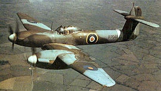
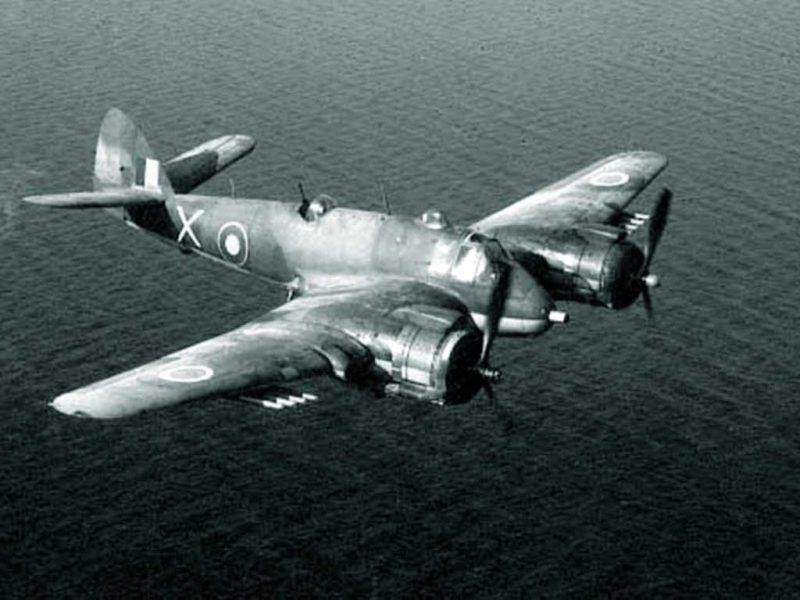

Лучшие самолёты 2-й мировой войны
Британия:
Supermarine Spitfire

Супермарин Спитфайр (англ. Supermarine Spitfire, в букв. переводе — «злюка, вспыльчивый») — британский истребитель времён Второй мировой войны. Различные модификации использовались в качестве истребителя, истребителя-перехватчика, высотного истребителя, истребителя-бомбардировщика и самолёта-разведчика. Всего были построены 20351 спитфайров, включая двухместные учебно-тренировочные машины. Часть машин оставалась в строю до середины 1950-х годов. Также часть машин была поставлена в СССР по ленд-лизу. Этот новый истребитель совершил свой первый испытательный полёт 5 марта 1936 года, под управлением пилота-испытателя Мата Саммерса (Mutt Summers). Во время испытательных полётов новый истребитель развил скорость в 562 км/час и поднялся на высоту 30 тыс. футов (9145 метров) за 17 минут. Это сделало созданный самолёт самым быстрым из существовавших на тот момент истребителей, кроме того, он являлся одним из самых хорошо вооружённых, так как нёс 8 7,7-мм пулемётов M1919.
Westland Whirlwind
Уэстленд Уирлуинд (англ. Westland Whirlwind) — британский двухмоторный одноместный истребитель периода Второй мировой войны. Спроектирован в КБ фирмы «Уэстленд эйркрафт» под руководством главного конструктора Уильяма Петера. Был второй конструкцией фирмы после Lysander'а Представлял собой цельнометаллический моноплан с закрытой кабиной и убирающимся шасси с хвостовой опорой. Первый полёт опытный истребитель совершил 11 октября 1938 года. Серийное производство на заводе «Уэстленд» в Йовиле началось в июне 1940 года. Оперативной готовности достиг 7 декабря 1940 г. Из-за того, что двигатели «Перегрин» не использовались нигде, кроме самого «Уирлуинда» (в отличие от «Мерлина»), «Роллс-Ройс» отказался от их развития, а затем и вовсе снял с производства. Это привело к низким темпам производства и окончательной остановке в январе 1942 г. Произведённых самолётов хватило для оснащения лишь 2 полноценных эскадрилий — 263-й и 137-й — также испытания проводила 25-я эскадрилья ночных истребителей. Из-за предельно плотной компоновки попытки оснастить самолёт новыми двигателями оказались безуспешны, а попытка создания нового самолёта с «Мерлинами» привела к появлению высотного перехватчика «Welkin», который, однако, также не нашёл широкого применения, уже из-за отсутствия целей.
Bristol Beaufighter
Бристоль Бофайтер (англ. Bristol Beaufighter) — двухместный тяжёлый истребитель, ночной истребитель, также используемый как лёгкий бомбардировщик, торпедоносец.
Бофайтер был очень продвинутым для своего времени самолётом, один из его вариантов стал первым в мире ночным истребителем, специально разработанным для этой роли. На момент своего боевого крещения, Бофайтер был вооружён четырьмя 20 миллиметровыми пушками и шестью 7,7 миллиметровыми пулемётами, что на тот момент было самым мощным вооружением в мире. Однако с сентября 1940 года, большинство Бофайтеров, поступавших в Британские ВВС, были вооружены только пушками, потому что пулемёты шли, в основном, на вооружение Спитфайеров и Харрикейнов, в которых ВВС остро нуждались. Однако уже к концу года всё встало на свои места, кроме того, на Бофайтер установили радар, что позволило резко повысить эффективность этого самолёта в ночных боях.
Этот самолёт принял участие в боях в Африке и на Мальте. Командование Береговой Охраны также очень эффективно использовало Бофайтеры, находящиеся у него на вооружении, особенно в районе Бискайского залива против немецких Юнкерсов Ju 88. В дальнейшем были разработаны варианты лёгкого бомбардировщика и торпедоносца.